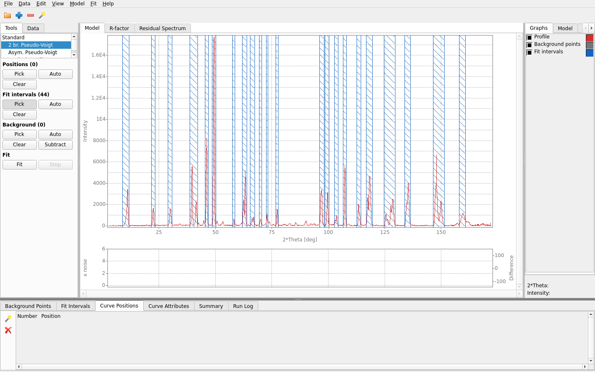
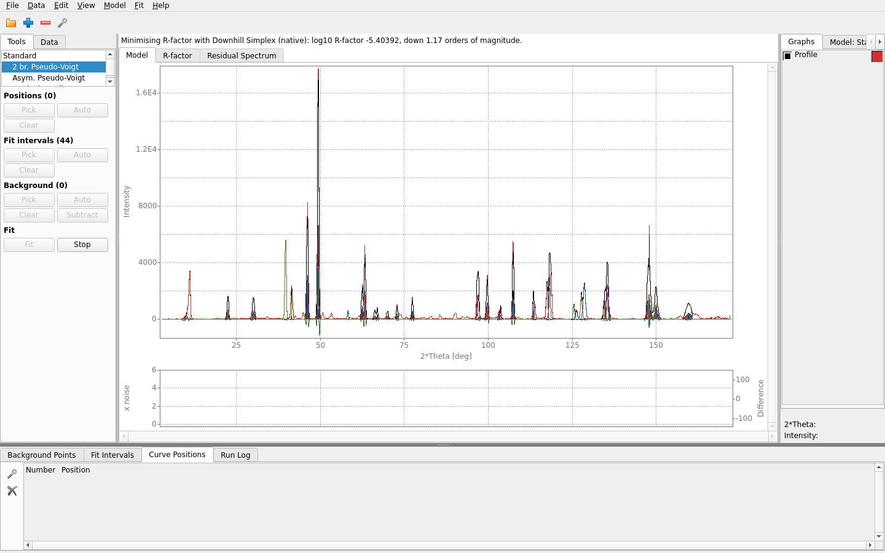
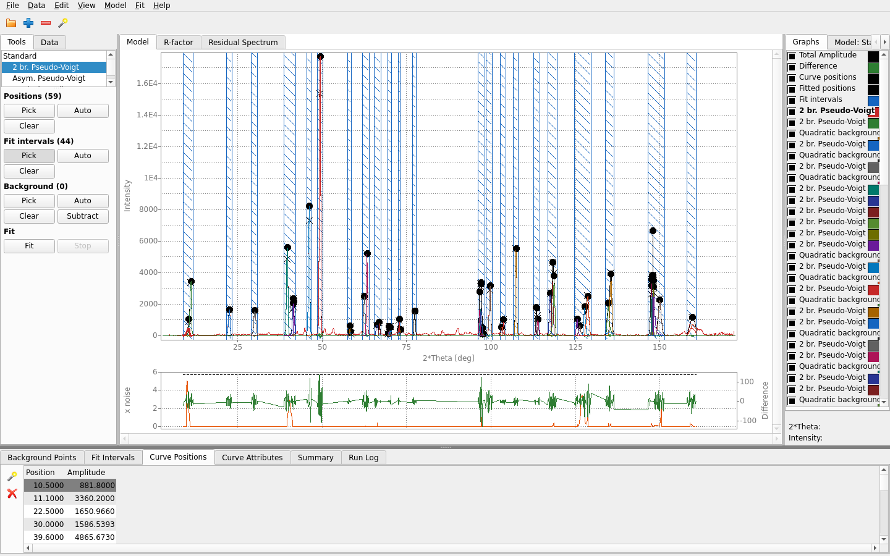

An interactive curve-fitting application. You load a data set, place curves on it, and the app fits them — one peak or a hundred, by hand or fully automatically.
Written in Free Pascal with Lazarus. It runs on Linux, Windows and macOS.
Automatic decomposition
One command, Fit → Automatically, turns a raw profile into a small set of curves. It adds a background curve when the model has none and seeds a curve on every point of every peak. It then removes curves one at a time for as long as the fit stays within the accuracy you set, the maximum acceptable R-factor. What is left is the fewest curves that accuracy allows, fitted together with the background over the profile as measured, which it never rewrites. You don't guess the number of curves or tune a penalty weight. On the two-peak sample that ships with Fit, 32 starting curves come down to 3 in well under a minute.
How to use it · How many curves does the profile need? — the rule, and how it compares with AICc, BIC and the other published methods.
Data from where it is published
File → New Project from Data Source finds a data set in a public repository, downloads the file you choose, shows a preview and starts a project from it, without leaving the program. No account is needed, and nothing is sent anywhere except the request itself.
Published data (DOI) takes a DOI or words. A DOI such as
10.5281/zenodo.4892237 (X-ray diffraction scans of Arabian sands)
goes straight to that record's files. Words such as calcite XRD
search Zenodo and figshare together for datasets, and only datasets holding a
file Fit can read are listed, each with its repository, date and the size of
those files.
Data catalog needs nothing typed: it lists the kinds of
file this build reads — PANalytical .xrdml scans, GSAS files,
tables, workbooks, archives — and opening one lists the newest datasets on
both repositories that hold such files.
Inside a record, papers, pictures and files nothing here reads are left out.
A .zip, .gz or .tar opens like a folder
and lists the readable files in it. For a table with several columns of
numbers, the preview lets you choose which one is plotted against the first.
What it does not do: it searches two repositories, Zenodo and figshare, a
page at a time (25 records from Zenodo, 10 from figshare). A dataset is listed
for the names of its files, so whether a .csv is a measurement or
a list of references is seen in the preview, before anything becomes a project.
It fetches data and nothing else — it does not identify a substance or
interpret what it downloads. Every request is written to the log, and when a
repository cannot be reached the other one's results are still shown, with a
line saying which failed and why.
A project embeds its data, so once it is made, fitting and reopening need
no network at all. Sources are contributed through one
RegisterDataSource line — the registry is on
the extension points page.
In every download
- Published data (DOI): a DOI, or words to search Zenodo and figshare
- Data catalog: the same repositories, browsed by kind of file
- any web address
- the sample files installed with Fit
Files it reads
- columns of numbers:
.dat,.xy,.txt - tables:
.csv,.tsv; workbooks:.xlsx,.ods(first sheet) - powder patterns:
.xrdml,.uxd, GSAS.gsa/.fxye, powder.cif,.xye,.chi - inside
.zip,.gz,.tar,.tgz
Contributed by a module
- the NIST Chemistry WebBook, with JCAMP-DX and SPC spectrum
readers (
Modules/open-data-spectra, its own variant, not in the downloads above)
Download
Built by CI from the sources in this repository. On macOS, build it
yourself: one script produces Fit.app and installs it.
| Platform | Download |
|---|---|
| Linux (x86-64) | Fit-linux.tar.gz — portable archive |
| Debian, Ubuntu (x86-64) | Fit-linux.deb — sudo apt install ./Fit-linux.deb |
| Fedora, RHEL, openSUSE (x86-64) | Fit-linux.rpm — sudo dnf install ./Fit-linux.rpm |
| Windows (x86-64) | Fit-windows-setup.exe — installer |
| macOS (Apple Silicon, Intel) | ./scripts/build-app.ps1 -Task all -Install |
Each link above serves the latest release · all releases
Fit is two programs: the desktop client, which has no fitting engine of its
own, and the compute server it talks to over HTTP. Every installed Fit
starts the server itself — the Windows shortcut, the Linux
fit command and Fit.app all launch through a wrapper
that starts a server on port 8787 when nothing answers there, and reuses one
that does. The portable Linux archive is the exception: start
fit_server before the client.
Building from source covers the script, the macOS bundle and a Lazarus IDE walkthrough with exact versions.
The fit, step by step



Where it stands
| Capability | State | Detail |
|---|---|---|
| Curve types | Implemented | 18 registered, including user-defined formulas |
| Data loaders | Implemented | 9 formats read (Diffraction profile, PANalytical XRDML scan, Bruker UXD scan, GSAS powder data, Powder pattern CIF, Powder pattern columns, Two-column numeric, Table of numbers, Spreadsheet, first sheet) |
| Data sources | Implemented | 4 registered (Published data (DOI), Data catalog, Sample data, Web address); 1 of them needs no network. A source declares what it asks for, and File → New Project from Data Source builds its steps from that. |
| Data export | Implemented | The curve parameters and the summary table, as tab-separated text (File → Export) |
| Compute backends | Implemented | Downhill Simplex (native), Levenberg-Marquardt (Python/lmfit), Downhill Simplex, curve by curve (native), Downhill Simplex, restarted (native). A remote fit_server is a transport choice of the native engine, not a separate engine. |
| Objectives | Implemented | 4, with curve-type compatibility derived from capabilities |
| REST API | Implemented | 15 verbs. Self-describing: the running server assembles its own OpenAPI 3.0.3 document at /openapi.json and renders it at /docs. Not committed anywhere - what a build serves is what that build does. |
| Module registration | Implemented | 13 seams; the framework ships no module |
| Argument axes | Implemented | Display-only: an axis never alters stored data or the fit |
| Charting component | Implemented | Lazarus’s TAChart, extended only through its own extension points: fit-interval bands, a caption per point, points dragged on the chart |
| Parallel and GPU compute | Partial | Fit intervals are fitted side by side on a bounded pool of threads; there is no GPU engine |
| Native installers and signing | Partial | Archives and .deb/.rpm are built; signing is off by default |
User guide
Everything the program can do, one chapter per part of it — the same text Fit shows under Help → Explain Everything, published from the same source, so the site and the program say the same thing. Contents.
- Getting started — What Fit is, The window and the compute server, The main window at a glance, A first fit, Fitting by hand, step by step, The Explain pane, Explain Everything, How much authority an explanation has, About Fit, Keeping Fit up to date
- Projects and files — Projects, New Project, Open Project, Open Recent, Save Project, Save Project As, What a project file holds, The .fitproj file format, Where the data came from, Unsaved changes, Import Profile, Two-column data files (.dat), Tables of numbers (.csv, .tsv, .xlsx, .ods), Reload Profile, Export Curve Parameters, Export Summary Table, Quit, Sample data, Command-line options, Log files, What Fit remembers on this computer, Where Fit keeps its files
- Data — The profile, The Data table, Argument axes and units, Value axes, The logarithmic axis, A custom argument axis, Working on part of the profile, Smoothing the profile, Data sources, Sample data, Web address
- Model — The model, Choosing a curve type, Building the model from the Tools tab, Picking points on the chart, Curve positions, Fit intervals, The Model tab, The Curve Attributes table, Parameter kinds: fitted, shared, fixed and computed, Limits on parameter values, Deleting a curve, Clearing the model, The model history
- Fitting — Fitting a model, Automatic decomposition, How many curves, Minimize Number of Curves, Minimize Difference, Stop, Why a fit command is greyed, The difference (R-factor), Max Acceptable Difference, Curve scaling, Minimizer, Loss Function, Weighting, How the fit's figures are weighted, What the fit will actually do, When a fit ends, Samples no curve covers, Is the difference only noise?, Compute Server, Compute backends, Setting up the Python engine
- The window — The main window, The Tools tab, The chart, Zooming and scrolling the chart, View Markers, The Graphs tab, Theme, The Model panel, The History tab, The Explain pane, Explain Everything, The tables at the bottom, The Fit Intervals table, The Curve Positions table, The Curve Attributes table, The Summary table, The Run Log, The Edit menu, The status bar, Screen scaling, What the window remembers, The window's size and its parts, Modules in the window
- Fit progress — Fit progress, Animation Mode, R-factor scale
- Peaks and diffraction — The background, The background curve, Subtracting the background, Background fraction, Background variation, The Background Points table, Diffraction angles: Theta, 2 Theta and sin(Theta)/lambda, Wavelength, Diffractometer and refinement files, Sample diffraction profiles, A first fit of peaks, Limits on the peaks, the backgrounds and your own formulas, The Residual Spectrum, User-defined curves, Writing the formula of a user-defined curve, Parameter roles and starting values, Selecting and deleting user-defined curves
- Published data — Published data (DOI), Data catalog
- Curve type — 2 br. Pseudo-Voigt, Asym. Pseudo-Voigt, Constant background, Doniach-Sunjic, Exponential background, Exponentially Modified Gaussian, Gaussian, Linear background, Lorentzian, Moffat, Pearson VII, Power-law background, Pseudo-Voigt, Quadratic background, Skewed Gaussian, Step (erf), User Defined, Voigt
- Noise rule — The noise of counts
- Implementations — The compute server itself, The Python sidecar, Downhill Simplex (native), Levenberg-Marquardt (Python/lmfit), Downhill Simplex, curve by curve (native), Downhill Simplex, restarted (native)
For developers
Fit is a framework as much as an application: a new curve type, data loader, optimiser or whole analysis vertical is added by registration, with no framework file changed. The developers' pages hold the architecture, the extension points and the how-tos, generated from the build itself.
Test data
A sample data set ships inside every download, under Data/, and
is offered by name under File → New Project from Data Source.
Separately: test_data.zip.
GPLv3-or-later. Documentation CC BY 4.0.